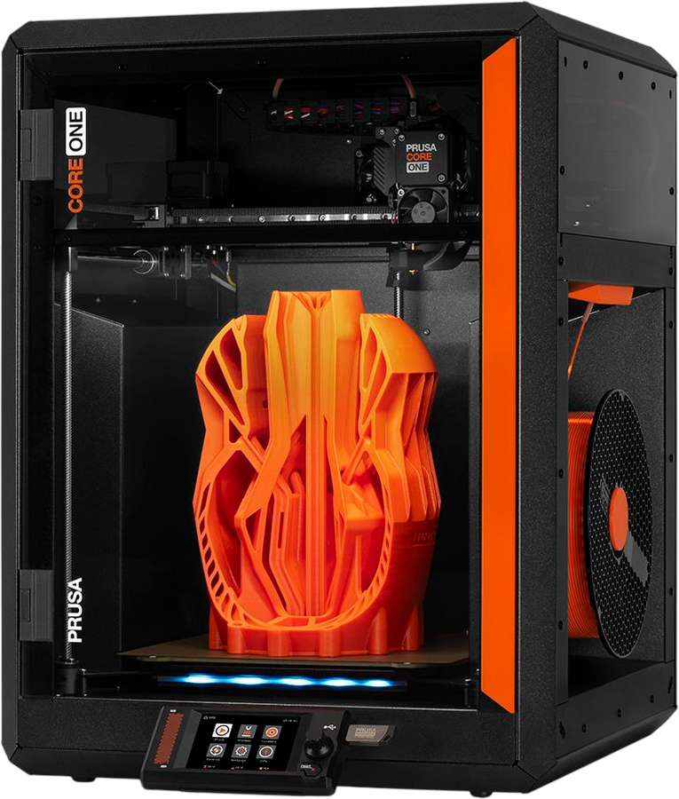
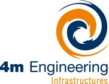
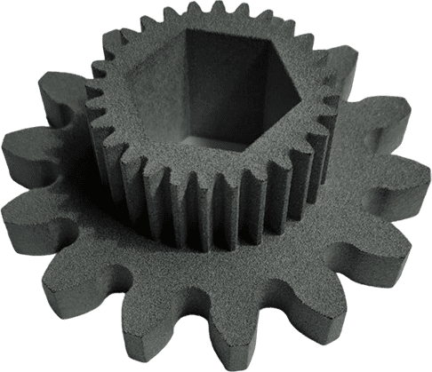

Fabriquerle futur,couche par couche.
Impression 3D SLS, FDM et résine, usinage CNC et scan 3D réunis dans un atelier à Welkenraedt. Prototypes, pièces techniques et petites séries pour l'industrie et les secteurs exigeants.
Six procédés.
Un interlocuteur.
Le procédé se choisit selon votre cahier des charges : résistance, précision, état de surface, quantité, budget.
SLS
Pièces fonctionnelles en nylon, sans supports. Petites séries rentables.
Explorer →FDM — Dépôt de filFDM
Du PLA au PEEK et à l'ULTEM : prototypes, outillages, pièces techniques.
Explorer →RES — RésineRES
Détails fins et surfaces lisses pour maquettes et prototypes d'aspect.
Explorer →CNC — UsinageCNC
Aluminium, laiton, bronze, titane, POM : usinés dans la masse.
Explorer →SCN — Scan 3DSCN
Numérisation et rétro-ingénierie des pièces introuvables.
Explorer →XXL — Grand formatXXL
Pièces de grandes dimensions en une seule impression.
Explorer →Ce qui tourne
à l'atelier.

Supermaker SLS1518
Supermaker SLS1518 : impression SLS industrielle compacte, volume 150×150×180 mm, PA11, PA12, TPU, CF, GF, recyclage poudre intégré. O&D, Liège.
Ouvrir la fiche →
Supermaker SLS3540 Pro
Supermaker SLS3540 Pro : impression SLS industrielle grand format, volume 350×350×430 mm, PA11, PA12, TPU, CF, GF, recyclage poudre intégré. O&D, Lièg
Ouvrir la fiche →
Bambu Lab H2C
La Bambu Lab H2C imprime en FDM jusqu'à 24 couleurs, idéale pour vos pièces multicolores et multi-matériaux. Disponible chez O&D Impression 3D à Liège
Ouvrir la fiche →
Bambu Lab X1C
Bambu Lab X1C : impression FDM haute vitesse, volume 256×256×256 mm, idéale pour la production en série et le prototypage rapide. O&D Impression 3D, L
Ouvrir la fiche →
Modix Big Meter
Impression 3D de très grande taille avec la Modix Big Meter. Pièces XXL et multi-matériaux disponibles chez O&D Impression 3D à Liège, Belgique.
Ouvrir la fiche →
Prusa Core One
Prusa Core One : imprimante FDM industrielle compatible ASA, ABS, PC et PA, pour vos prototypes et petites productions. Chez O&D Impression 3D à Liège
Ouvrir la fiche →





Du PLA
au PEEK.
22 fiches matériaux détaillées : propriétés, avantages, limites et machines compatibles.

PA11 Rilsan
Le PA11 Rilsan est un nylon biosourcé très résistant aux chocs et à la fatigue, offrant flexibilité et durabilité pour des pièces mécaniques exigeante
Ouvrir la fiche →
Nylon PA12 en Série
Production en série de pièces SLS en Nylon PA12 : excellente répétabilité et résistance mécanique élevée. Votre partenaire à Welkenraedt (Liège).
Ouvrir la fiche →
Nylon PA12 Gris SLS
Impression 3D SLS en Nylon PA12 gris : pièces fonctionnelles résistantes, stables et post-traitables. La référence SLS pour l'industrie, à Welkenraedt
Ouvrir la fiche →
Ultrasint® PA11 SLS
Impression 3D SLS en Ultrasint® PA11 : nylon biosourcé, plus souple que le PA12 et biocompatible, idéal pour le médical et les pièces flexibles. O&D,
Ouvrir la fiche →
Ultrasint® PA11 CF SLS
Pièces SLS rigides et légères en PA11 renforcé fibre de carbone : idéal pour structures aéronautiques, drones et robotique. O&D Impression 3D, Liège.
Ouvrir la fiche →
Nylon PA12 Chargé Verre SLS
PA12 renforcé billes de verre par frittage laser SLS : rigidité et stabilité dimensionnelle supérieures au PA12 standard. O&D Impression 3D, Liège.
Ouvrir la fiche →
Ultrasint® PA11 ESD SLS
Impression 3D SLS en PA11 ESD antistatique : protection des composants électroniques sensibles, adaptée aux environnements ESD stricts. O&D, Liège.
Ouvrir la fiche →
PA2210 FR SLS
Impression 3D SLS en PA2210 FR retardateur de flamme : certifié aéronautique et défense, conforme aux normes incendie les plus strictes. O&D, Liège.
Ouvrir la fiche →Du fichier
à la pièce.
Envoyez
Fichier STEP, STL ou 3MF, plan, croquis… ou la pièce à scanner.
Analyse & devis
Instantané avec fichier 3D, personnalisé sous 24 h.
Fabrication
Procédé et matière choisis selon vos contraintes.
Livraison
Envoi ou retrait à l'atelier de Welkenraedt.
Des projets
réels.
Pièce en Polypropylène pour Logopède
Outil de rééducation sur mesure pour logopède, reproduit en polypropylène par impression 3D et adapté aux besoins des patients. Ré
Voir le projet →Projet · 02Engrenage de Hachoir Reproduit en 3D
Engrenage de hachoir cassé reproduit en PLA : rétroconception en 1 h, pièce prête en moins de 48 h. Une réalisation d'O&D Impressi
Voir le projet →Projet · 03Pièces Audi S3 Reproduites en PAHT-CF
Reproduction de pièces Audi S3 endommagées en PAHT-CF et PLA : grille de pare-chocs et caches logo S3. Une réalisation d'O&D Impre
Voir le projet →Projet · 04Maquette Infrabel
Rails miniatures en PLA imprimés en 3D pour la maquette d'inauguration d'Infrabel. Une réalisation d'O&D Impression 3D, atelier à
Voir le projet →Projet · 05Semelles de Tabouret
Semelles de tabourets 40 cm en PLA noir, imprimées sur mesure pour des gîtes Airbnb à Herve : 24 h par pièce, prototype offert. Ré
Voir le projet →Projet · 06Pic de Barrière Reproduit en ASA
Pic de barrière décoratif cassé, redessiné à partir de photos et réimprimé en ASA résistant aux UV sur Bambu Lab X1C. Réalisation
Voir le projet →Projet · 07300 Porte-clés Bicolores pour Lx Cars
300 porte-clés bicolores au logo Lx Cars, en PLA, livrés par lots de 10 après validation d'un prototype. Bambu Lab X1C + AMS. Réal
Voir le projet →Projet · 08Coffrets Électriques
Reproduction de portes de coffrets électriques pour la Ville de Spa : rétroconception, impression sur Modix 60 cm et Bambu H2C. Ré
Voir le projet →Choisir, comparer,
chiffrer.
Quiz : quelle technologie ?
Quelques questions pour savoir quel procédé convient à votre pièce.
Ouvrir →OutilDevis instantané
Déposez votre STL, choisissez la matière : estimation immédiate.
Ouvrir →OutilComparateur de matériaux
PLA vs PETG, PEEK vs PEKK vs Ultem, FDM vs SLS vs résine…
Ouvrir →OutilGuide matériaux & technologies
Le guide complet pour choisir procédé et matière.
Ouvrir →Votre pièce, fabriquée.
Envoyez votre fichier 3D ou décrivez votre besoin : devis instantané avec fichier, devis personnalisé sous 24 h.